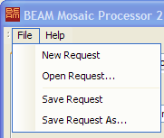

| BEAM Data Processors |
|
Data processors are a special class of tools in BEAM. They are all driven by so called processing requests. and can be invoked from the command line in batch mode or in interactive mode. This section describes the common request file format and the command line arguments common to all data processors in BEAM.
A processing request file is an XML file containing all parameter needed to run a specific processor.
A processor can be invoked from the command-line and the processing request file is passed as parameter to the program call. Alternatively, all processors can be run with a graphical user interface (GUI). This allows for editing the contents of the processing request file.
Using the Open, Save and Save as menu items of a processor's GUI, it is normally not necessary to edit processing request files manually. Using a processor in interactive mode, the processor can handle only one processing request file at a time. However, it is possible to invoke the processors in non interactive mode. In this mode, the processor can handle any number of processing requests in a request file so that it is possible to batch the processor.
The processing request file contains some standard elements required for all processors. The general structure of a processing request file is
<?xml version="1.0" encoding="ISO-8859-1"?>
<RequestList><Request type="SST">
</Request>
<Request type="SST">
</Request>
...</RequestList>
The first line in each file is the XML version specification and encoding.
A processing request file can contain any number of single processing requests,
contained in a request list, i.e. in a RequestList element.
Single processing requests is defined in this list by Request elements.
The predefined child elements of a Request element are:
<InputProduct file="..." format="..." typeId="..."/>
Specifies an input product. Thefileattribute is mandatory. Theformatattribute may describe a file format and is an optional attribute. The default value isBEAM-DIMAP. Also, thetypeIdattribute is optional and can contain a product type identifier string. Depending on the processor type, there can be zero, one or multipleInputProductelements in a request.
<OutputProduct file="..." format="..." typeId="..."/>
Specifies an output product. The meaning of the attributes is the same as for the input products.
<Parameter name="..." value="..."/>
Specifies a processing parameter. The list of available parameter names and their value ranges is specific for each processor. Common to all processing requests are the two parameters defining the logging behaviour of the processor:
- "log_prefix": defines the prefix of the log file to be written. The real name of the logfile consists of the prefix, a generation number (to be able to reuse the logfile name) and a unique identifier (to resolve file name conflicts). Logfiles are always written to the log directory of the BEAM installation.
- "log_to_output": a boolean parameter. When set to "true", an additional logfile is written to the directory selected for the output product.
When invoking a scientific processor from the command line, the following syntax is used:
> processor.bat [options] [processing_request] on Windows or
> processor.sh [options] [processing_request] on Unix Systems.
Where processor is one of the names of BEAM's scientific tools. The options can be one or more of the following:
-i or --interactive - run the processor in interactive
mode (i.e. with graphical user interface).
-q or --quiet - disable most logging messages.
Just severe errors are logged.
-v or --verbose - enable most logging messages..-d or --debug - enable debug messages on the console.The processing request must be supplied when the processor runs in non-interactive mode. In interactive mode, the request is an optional command line argument.
All processors currently implemented share the same simple user interface which is a main frame comprising common components such as a the file menu or the "Run" button to invoke the processor and processor specific options such as I/O settings and processing parameters.
